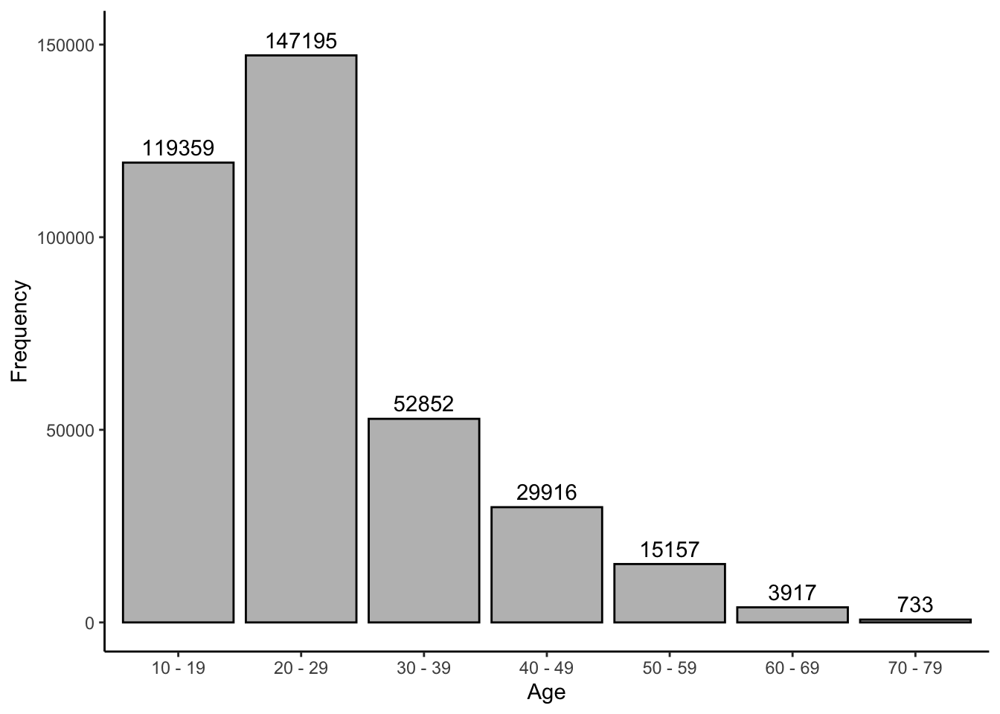

Chapter 3 Workspace
3.1 Load and Clean Data
First, we will load in two separate data sets from the SAPA project. The first is the larger set of items from the SAPA project, including comprehensive codebooks, while the second contains only the IPIP personality items but has more participants. We’ll use the codebooks from the former and the data from the latter.
wd <- "/Volumes/Emorie/projects/age nets"
data_path <- "https://github.com/emoriebeck/age_nets/blob/master"
load(url(sprintf("%s/data/SAPAdata18aug2010thru7feb2017.rdata?raw=true", data_path)))
load(url(sprintf("%s/data/IPIP100items04apr2006thru7feb2017.rdata?raw=true", data_path)))
# There is one row that is duplicated twice, so we'll remove it
IPIP100items04apr2006thru7feb2017 <-
IPIP100items04apr2006thru7feb2017 %>% group_by(RID) %>% filter(n() == 1)
# load custom themes for qgraph
source(sprintf("%s/age_nets/custom_qgraph.R", wd))First, we will get the item numbers for the IPIP 50.
# get item #'s for miniipip20 items
ipip20_items <- melt(ItemLists) %>%
filter(grepl("miniIPIP20", L1) == T & L1 != "miniIPIP20") %>%
mutate(value = as.character(value)) %>%
arrange(L1) %>%
group_by(L1) %>%
mutate(name = seq(1,n(),1),
name = paste(L1, name, sep = "_")) %>%
ungroup()## Warning in melt(ItemLists): The melt generic in data.table has been passed a list and will attempt to redirect to the relevant reshape2
## method; please note that reshape2 is deprecated, and this redirection is now deprecated as well. To continue using melt methods from reshape2
## while both libraries are attached, e.g. melt.list, you can prepend the namespace like reshape2::melt(ItemLists). In the next version, this
## warning will become an error.# get item #'s for ipip50 items
ipip50_items <- melt(ItemLists) %>%
filter(grepl("IPIP50", L1) == T & L1 != "IPIP50") %>%
mutate(value = as.character(value)) %>%
arrange(L1)## Warning in melt(ItemLists): The melt generic in data.table has been passed a list and will attempt to redirect to the relevant reshape2
## method; please note that reshape2 is deprecated, and this redirection is now deprecated as well. To continue using melt methods from reshape2
## while both libraries are attached, e.g. melt.list, you can prepend the namespace like reshape2::melt(ItemLists). In the next version, this
## warning will become an error.ipip50_items <- ipip50_items %>%
group_by(L1) %>%
mutate(name = seq(1,n(),1),
name = paste(L1, name, sep = "_")) %>%
ungroup()
# get item #'s for the ipip100 items
ipip100_items <- melt(ItemLists) %>%
filter(grepl("IPIP100", L1) == T & L1 != "IPIP100") %>%
mutate(value = as.character(value)) %>%
rbind(c("q_55", "IPIP100extraversion20")) %>%
arrange(L1) %>%
group_by(L1) %>%
mutate(name = seq(1,n(),1),
name = paste(L1, name, sep = "_")) %>%
ungroup()## Warning in melt(ItemLists): The melt generic in data.table has been passed a list and will attempt to redirect to the relevant reshape2
## method; please note that reshape2 is deprecated, and this redirection is now deprecated as well. To continue using melt methods from reshape2
## while both libraries are attached, e.g. melt.list, you can prepend the namespace like reshape2::melt(ItemLists). In the next version, this
## warning will become an error.Now, we’ll get item info, including the text and names of the scales.
## Get item content
#ipip20
ItemInfo20 <- ItemInfo100 %>%
filter(rownames(.) %in% ipip20_items$value) %>%
separate(IPIP100, into = c("Inventory", "Factor")) %>%
mutate(Factor = factor(Factor, levels = c("A", "C", "ES", "E", "I")),
Factor = recode(Factor,`A` = "agreeableness", `E` = "extraversion",
`ES` = "emotionalstability",`I` = "intellect",
`C` = "conscientiousness")) %>%
arrange(Factor)
#ipip50
ItemInfo50 <- ItemInfo100 %>%
filter(rownames(.) %in% ipip50_items$value) %>%
separate(IPIP100, into = c("Inventory", "Factor")) %>%
mutate(Factor = factor(Factor, levels = c("A", "C", "ES", "E", "I")),
Factor = recode(Factor,`A` = "agreeableness", `E` = "extraversion",
`ES` = "emotionalstability",`I` = "intellect",
`C` = "conscientiousness")) %>%
arrange(Factor)
#ipip100
ItemInfo100 <- ItemInfo100 %>%
filter(rownames(.) %in% ipip100_items$value) %>%
separate(IPIP100, into = c("Inventory", "Factor")) %>%
mutate(Factor = factor(Factor, levels = c("A", "C", "ES", "E", "I")),
Factor = recode(Factor,`A` = "agreeableness", `E` = "extraversion",
`ES` = "emotionalstability",`I` = "intellect",
`C` = "conscientiousness")) %>%
arrange(Factor)And the column names.
# get column names for ipip20 items in IPIP data
ipip20_cols <- c("RID", "age", "gender",
ipip20_items$value[ipip20_items$value %in%
colnames(IPIP100items04apr2006thru7feb2017)])
# get column names for ipip50 items in IPIP data
ipip50_cols <- c("RID", "age", "gender",
ipip50_items$value[ipip50_items$value %in%
colnames(IPIP100items04apr2006thru7feb2017)])
# get column names for ipip100 items in IPIP data
ipip100_cols <- c("RID", "age", "gender",
ipip100_items$value[ipip100_items$value %in%
colnames(IPIP100items04apr2006thru7feb2017)])And subset the data based on those items into new data frames.
ipip100_keys <- melt(keys.list) %>%
filter(grepl("IPIP100", L1)) %>%
mutate(code = ifelse(grepl("-", value), -1, 1)
, value = str_remove_all(value, "-"))## Warning in melt(keys.list): The melt generic in data.table has been passed a list and will attempt to redirect to the relevant reshape2
## method; please note that reshape2 is deprecated, and this redirection is now deprecated as well. To continue using melt methods from reshape2
## while both libraries are attached, e.g. melt.list, you can prepend the namespace like reshape2::melt(keys.list). In the next version, this
## warning will become an error.# IPIP100items04apr2006thru7feb2017_r <-
# reverse.code(IPIP100items04apr2006thru7feb2017 %>% select(RID, age, gender, one_of(ipip100_keys$value)), keys = c(1,1,1, ipip100_keys$code), mini = 1, maxi = 6)
# subset IPIP50 & IPIP100 SAPA data
ipip20 <- IPIP100items04apr2006thru7feb2017[, ipip20_cols]
ipip50 <- IPIP100items04apr2006thru7feb2017[, ipip50_cols]
ipip100 <- IPIP100items04apr2006thru7feb2017[, ipip100_cols]And then rename the column names of the new data frames using their putative Big 5 Traits.
# rename columns by trait
colnames(ipip20)[4:23] <- ipip20_items$name
colnames(ipip50)[4:53] <- ipip50_items$name
colnames(ipip100)[4:103] <- ipip100_items$nameAnd create a list of column names for later.
e <- c("quiet", "life_party", "draw_attention", "center_attention", "dont_talk",
"comfortable_others", "little2say", "background", "start_convo", "talk@parties")
a <- c("int_people", "-int_problems", "-int_others", "-concern", "others_emotions",
"soft_heart", "insult", "ease", "sympathize", "time4others")
c <- c("prepared", "exacting", "schedule", "chores", "leave_belongings", "order",
"make_mess", "forget_place", "details", "shirk_duties")
n <- c("disturbed", "relaxed", "change_mood", "irritated", "stressed", "upset",
"mood_swings", "often_blue", "seldon_blue", "worry")
o <- c("ideas", "not_abstract", "quick_understand", "no_imagination", "rich_vocab",
"imagination", "diff_abstract", "exc_ideas", "reflect", "diff_words")
all_cols20 <- paste(rep(c("a", "c", "n", "e", "o"), each = 4), c(paste("0", seq(1,4,1), sep = "")), sep = "")
all_cols50 <- paste(rep(c("a", "c", "n", "e", "o"), each = 10), c(paste("0", seq(1,9,1), sep = ""), "10"), sep = "")
all_cols100 <- paste(rep(c("a", "c", "n", "e", "o"), each = 20), c(paste("0", seq(1,9,1), sep = ""), seq(10,20,1)), sep = "")Now, we’ll create a function to recode the age variable to account for the smaller sample sizes among the older participants in the sample.
# create new age variable since sample sizes too small for older ages
# necessary to have all pairwise observations for correlations
recode_age <- function(df){
df$age2 <- df$age
df$age2[df$age >= 60 & df$age < 65] <- 62.5
df$age2[df$age >= 65 & df$age < 70] <- 67.5
df$age2[df$age >= 70 & df$age < 75] <- 72.5
df$age2[df$age >= 75] <- 78 # based on median of sample >= 75
df$age2 <- factor(df$age2)
df <- df %>%
mutate(age_groups = mapvalues(age, 10:79, rep(1:7, each = 10), warn_missing = F)) %>%
as_tibble()
}
ipip20 <- recode_age(ipip20)
ipip50 <- recode_age(ipip50)
ipip100 <- recode_age(ipip100)
rm(list = ls()[grepl("keys", ls())])ipip50 %>%
select(age2) %>%
mutate(decade = substr(as.numeric(as.character(age2)), 1, 1),
decade = sprintf("%s0 - %s9", decade, decade)) %>%
group_by(decade) %>%
summarize(n = n()) %>%
ggplot(aes(x = decade, y = n)) +
geom_bar(stat = "identity", color = "black", fill = "gray") +
geom_text(aes(label = n), nudge_y = 4000) +
labs(x = "Age", y = "Frequency") +
theme_classic()
ipip50 %>%
group_by(age2, gender) %>%
summarise(N = n()) %>%
filter(!is.na(gender)) %>%
mutate(gender = mapvalues(gender, c("male", "female"), c("M", "F"))) %>%
spread(gender, N) %>%
ungroup() %>%
mutate(`% Female` = `F`/(M+`F`)*100,
N = M + `F`,
age2 = mapvalues(age2, c("62.5", "67.5", "72.5", "78"),
c("60-65", "65-70", "70-75", "75+"))) %>%
select(`Age Group` = age2, N, `% Female`) %>%
kable(., "html", digits = 2, booktabs = T,
caption = "Table 1<br><em>Descriptive Statistics for Each Age Group</em>") %>%
kable_styling(full_width = F)## `summarise()` has grouped output by 'age2'. You can override using the `.groups` argument.| Age Group | N | % Female |
|---|---|---|
| 14 | 3489 | 66.81 |
| 15 | 7266 | 63.94 |
| 16 | 16993 | 65.10 |
| 17 | 29535 | 64.34 |
| 18 | 33867 | 64.34 |
| 19 | 28209 | 65.32 |
| 20 | 27216 | 64.80 |
| 21 | 25044 | 63.74 |
| 22 | 18464 | 61.60 |
| 23 | 15465 | 60.33 |
| 24 | 13093 | 61.68 |
| 25 | 12006 | 60.54 |
| 26 | 10222 | 61.94 |
| 27 | 9416 | 63.57 |
| 28 | 8578 | 62.93 |
| 29 | 7690 | 63.99 |
| 30 | 7565 | 62.06 |
| 31 | 6368 | 65.09 |
| 32 | 6097 | 65.11 |
| 33 | 5578 | 64.63 |
| 34 | 5221 | 64.07 |
| 35 | 5230 | 65.60 |
| 36 | 4685 | 64.65 |
| 37 | 4359 | 65.34 |
| 38 | 4024 | 64.84 |
| 39 | 3725 | 65.13 |
| 40 | 4037 | 63.86 |
| 41 | 3202 | 64.74 |
| 42 | 3452 | 64.80 |
| 43 | 3242 | 65.73 |
| 44 | 3024 | 65.97 |
| 45 | 3184 | 65.77 |
| 46 | 2592 | 66.94 |
| 47 | 2612 | 65.93 |
| 48 | 2326 | 67.07 |
| 49 | 2245 | 70.47 |
| 50 | 2480 | 67.50 |
| 51 | 1893 | 68.99 |
| 52 | 1903 | 67.74 |
| 53 | 1742 | 67.28 |
| 54 | 1551 | 65.51 |
| 55 | 1502 | 64.91 |
| 56 | 1179 | 66.24 |
| 57 | 1136 | 65.58 |
| 58 | 959 | 63.50 |
| 59 | 812 | 64.53 |
| 60-65 | 2714 | 60.21 |
| 65-70 | 1203 | 55.03 |
| 70-75 | 454 | 50.22 |
| 75+ | 279 | 47.67 |
rm(list = c("SAPAdata18aug2010thru7feb2017", "IPIP100items04apr2006thru7feb2017"))
gc()## used (Mb) gc trigger (Mb) limit (Mb) max used (Mb)
## Ncells 11976928 639.7 27622082 1475.2 NA 53948894 2881.2
## Vcells 538367782 4107.5 1130223224 8623.0 32768 2803745350 21390.9